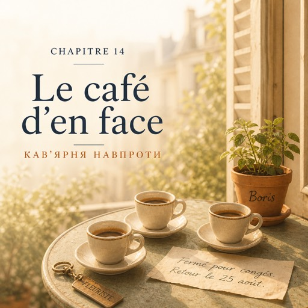

Le dimanche 28 septembre — неділя, 28 вересня
Le dimanche, la rue de Bretagne est pleine.
У неділю вулиця Бретань повна людей.
Le marché est à deux cents mètres, et tout le monde passe devant la vitrine avec un panier.
Ринок за двісті метрів, і всі проходять повз вітрину з кошиком.
On ouvre à neuf heures et on ferme à deux heures.
Відчиняємо о дев'ятій, зачиняємо о другій.
C'est le jour le plus court et le plus rapide de la semaine.
Це найкоротший і найшвидший день тижня.
Élodie travaille le dimanche. Trente-cinq ans, deux enfants, elle habite à Bagnolet.
У неділю працює Елоді. Тридцять п'ять років, двоє дітей, живе в Баньоле.
— Toi, c'est Nathalie, c'est ça ? Moi, c'est Élodie. Bref, bienvenue.
— Ти Наталі, так? А я Елоді. Коротше, ласкаво просимо.
Elle parle vite, et elle sait tout.
Вона говорить швидко — і знає все.
— La dame du café d'en face, c'est madame Nguyên.
— Пані з кав'ярні навпроти — це мадам Нгуєн.
— Le monsieur du numéro douze, il a vendu son appartement.
— Пан із дванадцятого будинку продав квартиру.
— Et le boulanger, du coup, il part à la retraite en janvier.
— А пекар, до речі, у січні йде на пенсію.
— Vous connaissez tout le monde ?
— Ви всіх знаєте?
— Tout le monde. Enfin, presque.
— Усіх. Ну, майже.
Natalia hésite. Puis elle demande.
Наталя вагається. Потім питає.
— Et monsieur Vasseur ?
— А мсьє Вассер?
Élodie s'arrête. Une seconde entière.
Елоді зупиняється. На цілу секунду.
— Lui, non. Lui, je ne sais pas.
— Оцього — ні. Оцього я не знаю.
À deux heures, Karim baisse le rideau de fer. Ils traversent la rue tous les trois.
О другій Карім опускає залізну ролету. Вони втрьох переходять вулицю.
Le café d'en face a six tables et une machine qui fait beaucoup de bruit.
У кав'ярні навпроти шість столиків і машина, яка страшенно гуркоче.
Karim commande trois cafés en criant par-dessus la machine.
Карім замовляє три кави, перекрикуючи машину.
Élodie enlève ses chaussures sous la table.
Елоді скидає туфлі під столом.
— Mes pieds. Le dimanche, mes pieds, c'est fini.
— Мої ноги. У неділю мої ноги — це все, кінець.
Karim parle de musique. Élodie parle de ses enfants.
Карім говорить про музику. Елоді — про своїх дітей.
Natalia écoute et comprend presque tout.
Наталя слухає й розуміє майже все.
Puis Karim regarde l'heure.
Потім Карім дивиться на годинник.
— Ah, tiens. Je suis en avance.
— О, дивись. Я прийшов зарано.
— Toi, en avance ? Impossible.
— Ти — зарано? Неможливо.
Une seconde de silence. Puis Élodie rit, et Karim rit aussi.
Секунда тиші. Потім Елоді сміється, і Карім теж.
C'est la première fois qu'elle fait rire quelqu'un en français.
Це вперше вона розсмішила когось французькою.
Le soir, à huit heures, elle appelle Serguiy. C'est dimanche. C'est toujours le dimanche.
Увечері о восьмій вона дзвонить Серґію. Неділя. Завжди неділя.
— Salut. Ça va ?
— Привіт. Як ти?
— Ça veut dire non.
— Це означає «ні».
— Ça veut dire dimanche.
— Це означає «неділя».
Elle raconte le magasin, les seaux, le rideau, madame Nguyên, les pieds d'Élodie.
Вона розповідає про магазин, відра, ролету, мадам Нгуєн, ноги Елоді.
Puis elle envoie trois photos.
Потім надсилає три фотографії.
— Attends. C'est toi qui as fait ça ?
— Чекай. Це ти зробила?
— En un mois.
— За місяць.
— En deux semaines.
— За два тижні.
— Tu parles français combien d'heures par jour, maintenant ?
— Скільки годин на день ти тепер говориш французькою?
— Je ne compte pas.
— Я не рахую.
— C'est exactement ça. Il ne faut pas compter. Il faut être obligé.
— Оце воно і є. Рахувати не треба. Треба бути змушеною.
— Au magasin, ils m'appellent Nathalie.
— У магазині мене звуть Наталі.
— Ah. Alors maintenant, c'est Nathalie ? Madame Nathalie ?
— О. То тепер ми Наталі? Мадам Наталі?
— Madame Nathalie, du Jardin d'Émile.
— Мадам Наталі з «Саду Еміля».
Il rit. Puis il ne rit plus.
Він сміється. Потім перестає.
— Nathalie. En fait, ça sonne bien.
— Наталі. А знаєш, звучить добре.
— Tu trouves ?
— Тобі так здається?
— Oui. Ça te va.
— Так. Тобі пасує.
— Et toi, ça va vraiment ?
— А ти — як ти насправді?
— Le dimanche, à Cracovie, il n'y a personne. Je travaille, je marche, je rentre. Voilà.
— У неділю в Кракові нікого немає. Працюю, гуляю, вертаюся. Оце й усе.
— Il te faut quelqu'un à qui parler longtemps.
— Тобі потрібен хтось, із ким можна говорити довго.
— Il me faut surtout une copine, c'est ça ?
— Мені передусім потрібна дівчина, так?
— Je n'ai rien dit.
— Я нічого не казала.
— Tu as tout dit.
— Ти сказала все.
Il rit. Elle raccroche à neuf heures et quart.
Він сміється. Вона кладе слухавку о чверть на десяту.
Après, elle reste un moment, le téléphone à la main.
Потім ще якийсь час сидить із телефоном у руці.
Il a dit « Nathalie » quatre fois ce soir. La première fois, c'était une blague.
Він сказав «Наталі» чотири рази за вечір. Першого разу це був жарт.
La dernière, non.
Останнього — ні.